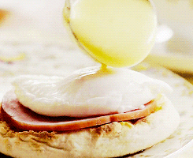

EggsBenedict Recipes!

Dish description!
Making eggs Benedict requires careful orchestration.
You have to have warm,crispy bacon,hot buttered toasted English muffins,
egges poached perfectly to your desire,
and a warm,creamy,
unbroken hollandaise sauce,all at about the same time.
No wonder i rarely eat Eggs Benedict unless i'm eating out,
my brain is scrambled enough as it is in the morning
without having to juggle
in the kitchen
Ingredients!
- 8 slices bacon or 4 slices Canadian bacon
- 4 large eggs
- 2 teaspoons white or rice vinegar
- 2 English Muffins
- Butter
- 2 Tablespoons chopped parsley.for garnish
For the sauce.
- 10 tablespoons unsalted butter (if using salted butter, omit the added salt)
- 3 large egg yolks
- 1 tablespoon lemon juice
- 1/2 teaspoon kosher salt
- Dash cayenne or Tabasco sauce
Steps
- Cook the bacon
- Bring the poaching water to simmer
- Make the Hollandaise sauce
- Poach the eggs
- Toast theEnglish muffins
- Assemble the eggs Benedict
Back to the menu -->